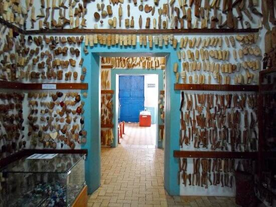
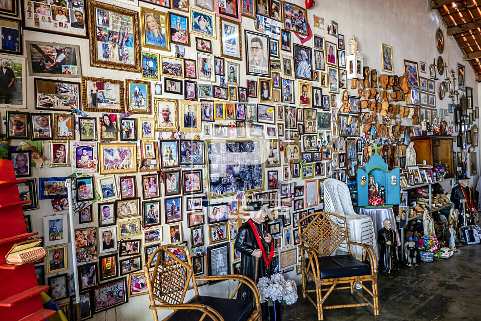
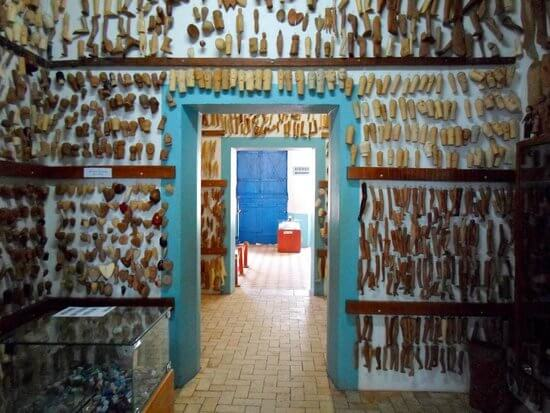
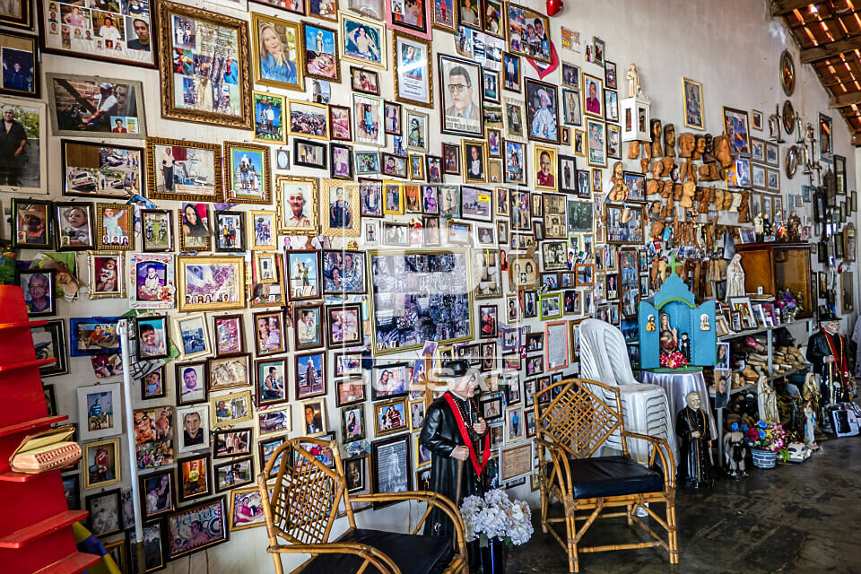
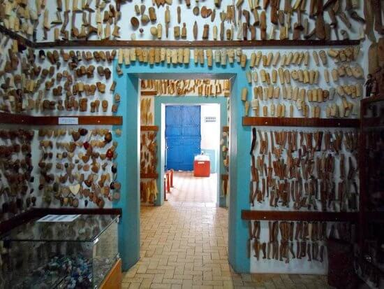
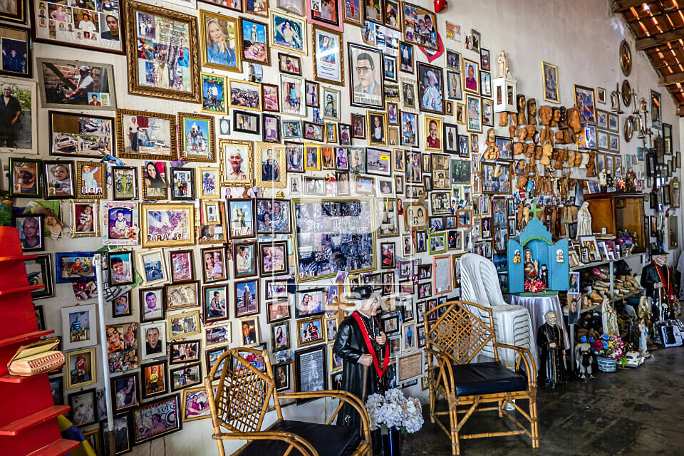

Fotos e Sua Localização


 



O Museu Vivo do Padre Cícero está localizada no Juazeiro do Norte, Ceará. Para mais detalhes, veja o mapa abaixo:
Inaugurado no dia 1º de novembro de 1999, no velho Casarão do Horto, o Museu Vivo de Padre Cícero possui cinco ambientações com personagens em tamanho real, a partir de resina de poliéster. Percorrendo os cômodos do imóvel, o visitante encontra o Padre Cícero em um café da manhã com amigos; em uma capela ao lado da beata Maria de Araújo – protagonista dos milagres; despachando com José Marrocos em seu gabinete; orando e descansando em uma rede. Na primeira sala do museu, fotos e dados sobre a vida do sacerdote, além de muitos ex-votos de fiéis ao longo do percurso na casa que serviu para retiros espirituais do Padre Cícero.


O Museu Vivo do Padre Cícero está localizada no Juazeiro do Norte, Ceará. Para mais detalhes, veja o mapa abaixo: